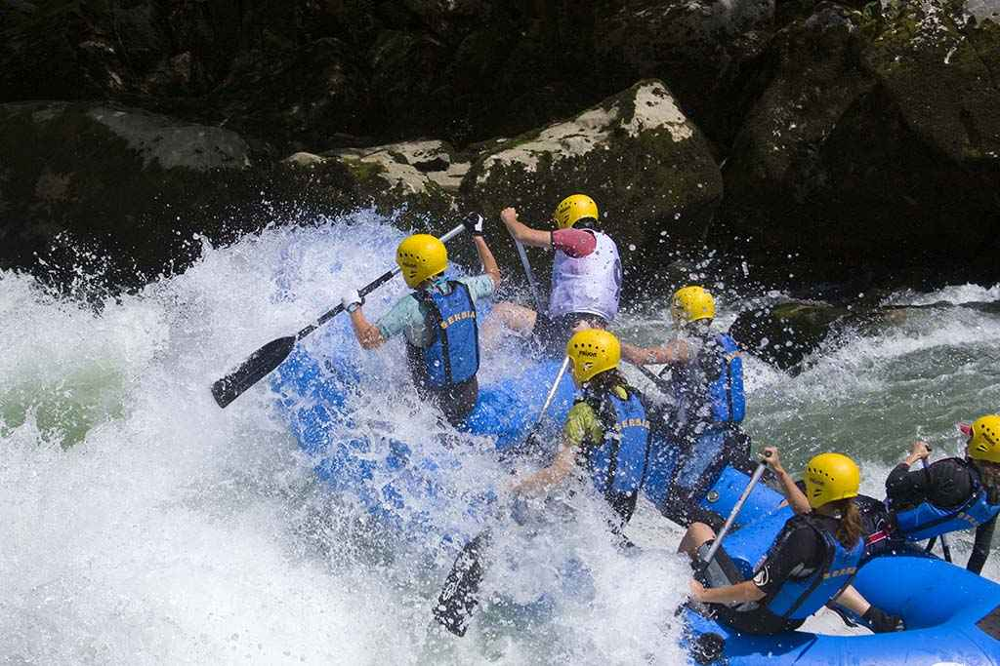

Afriq Raft
Get in Touch
Whether you're planning your first rafting adventure or returning for another splash of excitement, we’d love to hear from you!
üìç **Address:**
Afriq Raft Adventures
12 Riverbank Drive, Jinja, Uganda
üìû **Phone:**
+256 701 123 456
üìß **Email:**
info@afriqraft.com
Feel free to call, email, or stop by our office—we're always ready to help you plan the perfect river experience!
History
Afriq Raft began with a simple dream — to share the thrill and beauty of Africa’s rivers with the world. What started as a small team of river enthusiasts has grown into a trusted water rafting company known for unforgettable adventures, top-tier safety, and happy clients.
From our first raft to our latest expedition, our mission has remained the same: create exciting, safe, and memorable experiences for everyone who joins us. We take pride in delivering not just a ride, but a journey that brings joy, laughter, and connection with nature.
Today, Afriq Raft continues to make waves — one happy customer at a time.